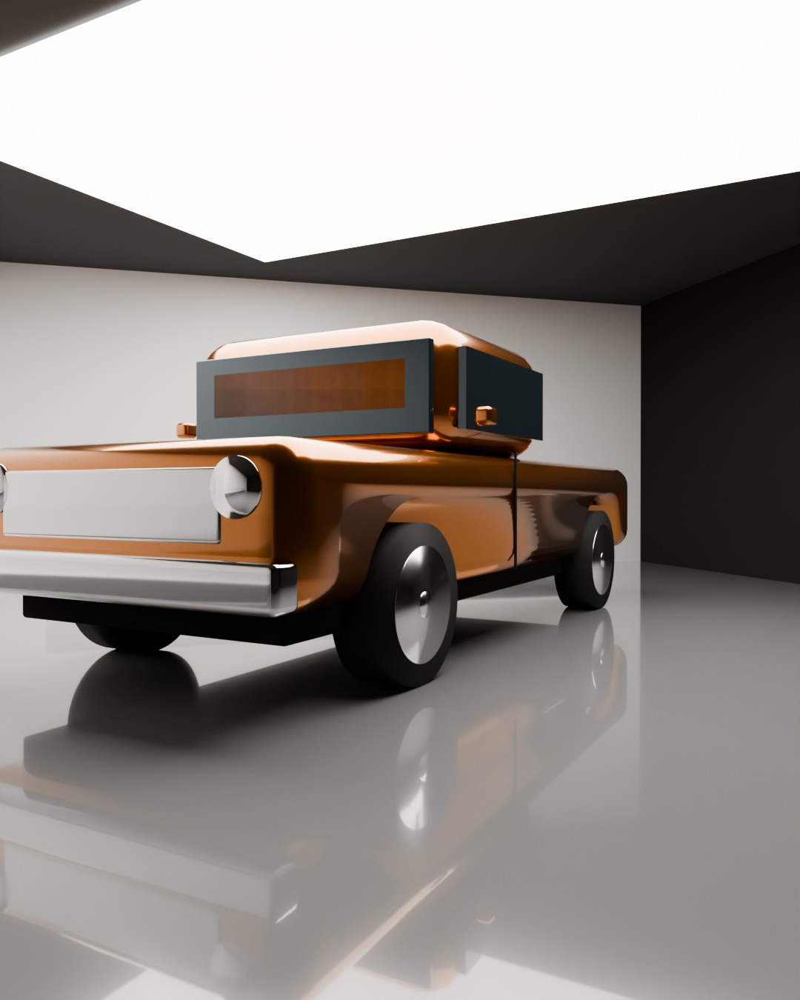
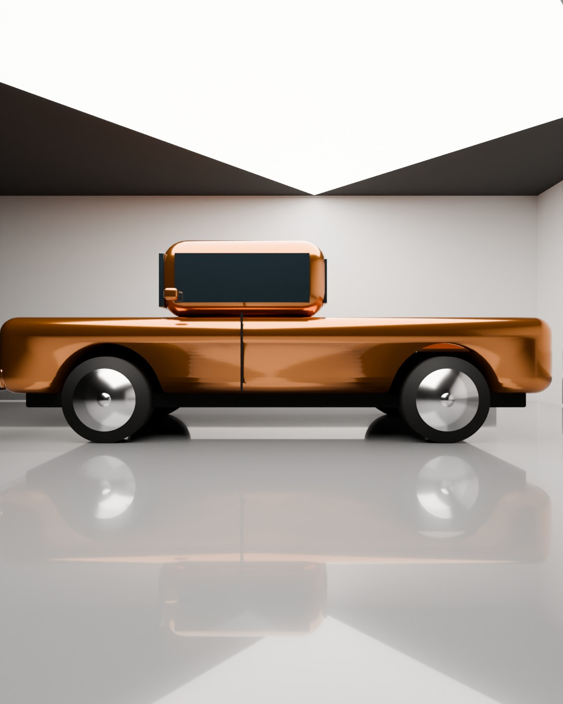
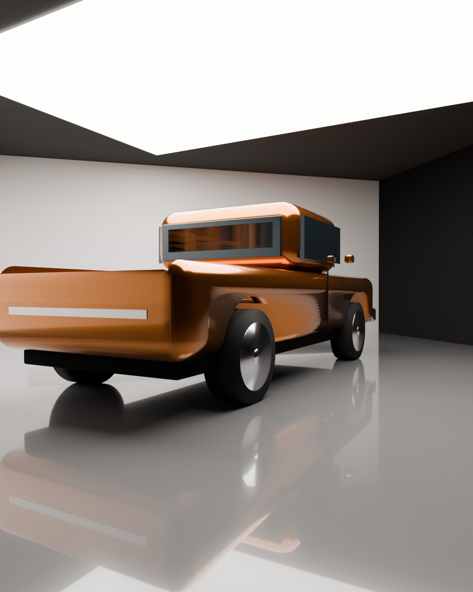

Estudio Godzilla
Convertir la bodega en un estudio de video para que cada vehículo que salga del taller se vea como en los reels de RK Motors: fondo blanco sin esquinas, piso espejo y una pintura que brilla.
Versión 3 · 22 sep 2026 · La propuesta cubre equipo y montaje del equipo. Precios en USD verificados el 18 sep 2026 en fabricante, B&H y Adorama.
Así se ve el resultado que buscamos
Este es el reel de referencia de RK Motors: 34 segundos, vertical, 136 mil likes. Son 9 tomas cortas de un camión sobre fondo blanco. Parece simple, pero lo hacen cinco cosas.

★ Color de piso recomendado: gris medio (tipo Sherwin-Williams "Dovetail" o el "Medium Gray" de cualquier epoxi 100 % sólidos). El plata refleja más pero se quema con vehículos blancos; el grafito da más drama pero oscurece los bajos.
34 × 26 ft y 11 ft de alto: así se acomoda
El vehículo va en diagonal frente a un rincón blanco. La cámara queda en la esquina opuesta, con 20 ft libres para verlo completo. El techo de 11 ft cambia una sola cosa: en vez de colgar una caja de luz encima, el techo mismo se convierte en la luz.
Qué es cada letra
Techo de luz. Un rectángulo blanco de 20 × 14 ft en el techo sobre el vehículo, el resto del techo negro. Las lámparas A lo iluminan desde abajo y el rectángulo rebota una luz gigante y suave, igual a la caja de luz de RK, sin colgar nada. Las opciones para hacerlo lo más grande posible están en la sección 05.
Cortinas blancas laterales: van del piso al techo (11 ft) y se recogen 1 ft en el piso para formar la curva. No necesitan más altura: la luz viene del techo, no de arriba de ellas.
Tres opciones de equipo, una recomendada
Las tres usan el mismo plano. Cambia cuánta luz hay y con qué cámara se graba. Todo el equipo de la Básica se reutiliza si después se sube a la Recomendada.
| Opción 1 · Básica | Opción 2 · Recomendada | Opción 3 · Pro | |
|---|---|---|---|
| Techo de luz | 1 lámpara profesional al techo. | 2 lámparas profesionales al techo: luz pareja en todo el vehículo. | 2 lámparas del doble de potencia. |
| Luz de pintura | Lámpara + domo suave 5 ft en brazo. | Lámpara + domo suave 5 ft en brazo. | Lámpara profesional grande + domo. |
| Otras luces | Ninguna. | Ventana 8 × 8 + luces de interior + 4 tubos. | Igual que la 2 + luces para el fondo + minis para rines y motor. |
| Cámara | Sony a7 IV + lente 24-70 + macro. | Sony FX3 (cámara de cine) + 24-70 + macro. | FX3 + lentes Sony GM + gran angular. |
| Movimiento | Estabilizador + riel manual + trípode. | Estabilizador con foco automático + riel motorizado + trípode fluido. | Igual que la 2 + monitor profesional. |
| Qué se ve | Los detalles quedan perfectos: rueda, motor, interior, pintura. El plano general sale plano, sin la franja de luz larga en las puertas. | El look RK Motors completo en el reel vertical, incluido el plano general. | Igual que la 2, más calidad para YouTube en 4K, fotos de venta y poder cambiar el color del fondo. |
| Montaje | Instalación, calibración de luces, prueba de grabación y capacitación al equipo. | Instalación, calibración de luces, prueba de grabación y capacitación al equipo. | Instalación, calibración de luces, prueba de grabación y capacitación al equipo. |
| Equipo | $11,600 | $22,400 | $36,800 |
Por qué la 2
Es la primera opción donde el plano general, la toma que más se comparte, se ve como RK. Y la cámara de cine graba vertical sin límite de tiempo ni recalentamiento.
Cuándo la 1
Para arrancar ya o probar el concepto. Todo se reutiliza en la 2.
Cuándo la 3
Si además del reel se quiere producir video en 4K para YouTube y fotos de venta con el mismo equipo.
Cómo se vería desde tres ángulos
Cálculo físico de la luz con el plano de arriba y las medidas exactas de la bodega, usando un vehículo de medidas estándar. Piso epoxi gris medio.




Cómo hacer el techo de luz lo más grande posible
Con 11 ft de alto hay tres maneras de lograr una fuente de 20 × 20 ft sobre el vehículo. Las tres se compran hoy con estos links. La B es la que recomendamos para este techo.
A · Rebote
Tela blanca de 20 × 20 ft tensada contra el techo y dos lámparas en el piso apuntando hacia arriba. Es lo más barato y las lámparas sirven también para otras cosas.
Pierde parte de la luz en el rebote y las lámparas del piso pueden reflejarse en la carrocería: van detrás de la cámara o a los lados.
≈ $4,000
B · Caja de tubos recomendada
Un marco de 20 × 20 ft colgado a 1 ft del techo, 16 tubos LED de 4 ft en cuatro filas y una seda blanca por debajo. Queda un techo de luz real de 20 × 20, parejo, regulable y sin nada en el piso.
Roba solo 1 ft de altura. Tubos con CRI 97, bicolor, se controlan desde el celular.
≈ $5,000
C · Paneles flexibles
Paneles LED de 4 × 4 ft pegados al techo bajo una seda. Muy delgados, pero para cubrir 20 × 14 ft harían falta muchos: no llega al tamaño de A o B con el mismo dinero.
Sirve como refuerzo de B, no como reemplazo.
≈ $5,200 por 48 ft²
A · Rebote · lista de compra
| Ítem | Para qué | USD |
|---|---|---|
| Matthews 20 × 20 Matthbounce (blanco/negro) | La tela blanca del techo. Alternativa más barata: Modern Studio 20 × 20 $753 | 1,040 |
| Aputure LS 600c Pro II × 2 | Las dos lámparas que apuntan al techo. Oferta: de $2,490 a $1,490 c/u | 2,980 |
| Grapas y cable de acero para tensar la tela al techo | Si el techo tiene vigas se grapa directo; si no, sumar el marco Kupo 20 × 20 $1,335 | ~100 |
| Total | ≈ 4,120 |
Versión económica: cambiar las LS 600c por dos Amaran 300c ($455 c/u) → ≈ $2,050. Versión potente: dos Aputure STORM 1200x ($2,990 c/u) → ≈ $7,100.
B · Caja de tubos · lista de compra
| Ítem | Para qué | USD |
|---|---|---|
| Nanlite PavoTube II 30C × 16 | Tubos LED de 4 ft, CRI 97, bicolor y color, con batería. Oferta: de $319 a $199 c/u. Alternativa: Godox TL120 kit 4 $1,443 | 3,184 |
| Kupo 20 × 20 Butterfly Frame Kit | El marco que cuelga a 1 ft del techo. Se arma también como 12 × 12 | 1,335 |
| Matthews 20 × 20 Artificial Silk blanco | La seda por debajo de los tubos: convierte 16 tubos en una sola fuente pareja | 516 |
| Cadena, ganchos y 4 puntos de anclaje al techo | Colgado fijo | ~150 |
| Total | ≈ 5,185 |
Empezar con 12 × 12 (8 tubos, marco Kupo 12 × 12 $820, seda 12 × 12) cuesta ≈ $3,000 y crece después a 20 × 20 agregando tubos.
C · Paneles · lista de compra
| Ítem | Para qué | USD |
|---|---|---|
| Godox KNOWLED F600Bi 4 × 4 × 3 | Paneles flexibles de 4 × 4 ft, CRI 96, se pegan al techo. Mejor precio por pie cuadrado en paneles | 5,247 |
| Amaran F22c 2 × 2 | Alternativa pequeña por panel, $899 c/u | 899 |
| Aputure INFINIMAT 4 × 4 | El panel más potente (1,600 W) si se quiere solo uno grande | 4,990 |
Cómo entra en las opciones de equipo. Las opciones 1, 2 y 3 de la comparación usan la versión A (lámparas al techo). Si se prefiere la caja de tubos B en la Opción 2, se cambian las dos lámparas ($2,980) por la caja ($5,185) y el total sube a ≈ $24,600. La tela y el marco se reutilizan en cualquier caso.
Detalle técnico del equipo
Marca por marca. Precios USD sin impuestos. La lámpara principal está en liquidación (40 % menos) mientras dure el stock.
Opción 1 · Básica · $11,600
| Ítem | Qué es | USD |
|---|---|---|
| Lámpara al techo | Aputure LS 600c Pro II (oferta) | 1,490 |
| Luz de pintura | Amaran 300c + Light Dome 150 | 724 |
| Grip | 2 banderas negras 4 × 4, tela negra 20 × 20, 4 C-stands, brazo | 1,879 |
| Cámara | Sony a7 IV + Sigma 24-70 II + Sony 90 macro + polarizador + ND | 4,815 |
| Movimiento | DJI RS 4 Pro + riel Zeapon + trípode Benro | 1,738 |
| Monitor y audio | Atomos Shinobi II + Zoom F3 + Sennheiser MKE 600 | 998 |
| Total equipo | 11,644 |
Opción 2 · Recomendada · $22,400
| Ítem | Qué es | USD |
|---|---|---|
| Lámparas al techo | Aputure LS 600c Pro II × 2 (oferta, de $2,490 c/u) | 2,980 |
| Luz de pintura | Amaran 300c + Light Dome 150 | 724 |
| Ventana 8 × 8 | Amaran 300c + marco Kupo + tela de difusión | 1,490 |
| Interior y detalles | Lantern 90 + Amaran F21c + kit MC de 4 minis | 1,237 |
| Tubos | Nanlite PavoTube II 30C kit 4 | 720 |
| Grip | Banderas Matthews × 2, tela negra 20 × 20, 4 C-stands, 2 combos, brazo | 3,029 |
| Cámara | Sony FX3A + Sigma 24-70 II + Sony 90 macro + polarizador + ND | 7,214 |
| Movimiento | DJI RS 4 Pro Combo + Focus Pro + Edelkrone SliderPLUS + Sachtler | 3,712 |
| Monitor y audio | Shinobi II + Zoom F3 + MKE 600 + Rode Wireless PRO | 1,297 |
| Total equipo | 22,403 |
Opción 3 · Pro · $36,800
| Ítem | Qué es | USD |
|---|---|---|
| Lámparas al techo | Aputure STORM 1200x × 2 (el doble de potencia) | 5,980 |
| Luz de pintura | LS 600c Pro II + Light Dome 150 | 1,759 |
| Ventana, interior, tubos, fondo | Amaran 300c, Lantern + F22c + MC Pro 8, PavoTube 30XR kit 4, Halo 200x × 2 | 5,649 |
| Grip | Stands Matthews, banderas Matthews, marcos, tela negra | 5,543 |
| Cámara | FX3A + Sony 24-70 GM II + 16-35 GM II + 90 macro + filtros | 10,943 |
| Movimiento, monitor, audio | RS 4 Pro Combo + Focus Pro + SliderPLUS + Sachtler + SmallHD Ultra 5 + audio | 6,909 |
| Total equipo | 36,783 |
Energía y ajustes de cámara
- Una LS 600c Pro II consume 720 W (6 A). Dos caben en un circuito de 20 A. Una STORM 1200x consume 1,550 W (13 A): un circuito de 20 A solo para ella.
- Nunca compartir circuito con el compresor del taller ni con el aire acondicionado.
- Cámara: 4K a 60 cuadros para bajar a 30 en edición, obturador 1/120, ISO 800, f/4 a f/5.6, balance fijo 5600 K exterior y 3200 K interior, polarizador girado toma por toma.
Fuentes de precios: aputure.com, amarancreators.com, nanliteus.com, msegrip.com, kupogrip.com, store.dji.com, edelkrone.com, smallhd.com, fjwestcott.com, canvasgrip.com y fichas de B&H, Adorama y Sweetwater con fecha 2026. Análisis del reel: instagram.com/reel/DXueW7-DQWY.